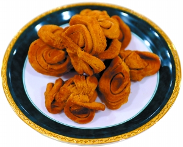
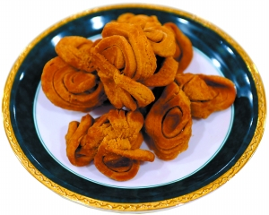

更多美食联系我们了解更多
|  |
|
|---|---|
| 大良崩砂 | 伦教糕 |
| 双皮奶的简介 |
|---|
| 双皮奶是一种著名的粤式甜品。产于中国广东顺德，甘香嫩滑，别具一格。相传双皮奶是1850年由一位董婆婆在顺德大良发明。双皮奶在广东很著名。 |
| 在澳门，以义顺的双皮奶最为驰名。而在广州，就以在20世纪40年代就开始经营的南信甜品店最为知名。在香港，澳洲牛奶公司是最为驰名。在顺德，则以仁信和民信为最著名。 |
| 在顺德，则以仁信和民信为最著名。 |
| |
|
|
|---|---|---|
| 仁信老铺（华盖店） | 更多美食联系我们了解更多 |
|  |
|
|---|---|
| 大良崩砂 | 伦教糕 |